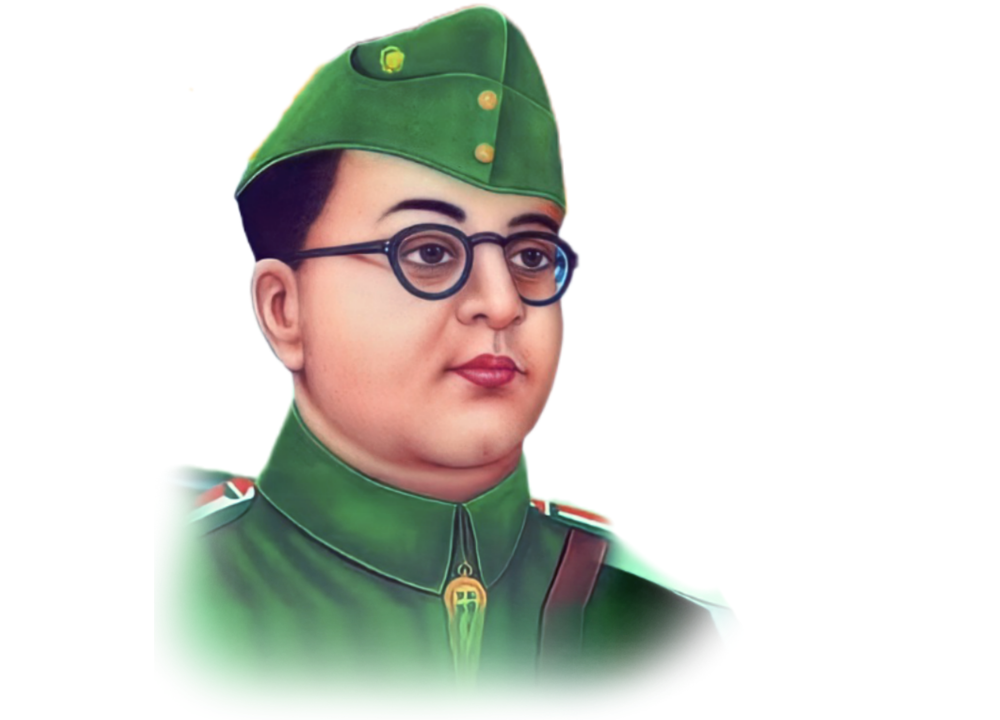

Subhas Chandra Bose

Subhas Chandra Bose, a fierce Indian nationalist, led the Indian National Army in the fight for independence and is celebrated for his unwavering commitment to freedom.
about the legend
-
Birth and Early Life:
Subhas Chandra Bose was born on January 23, 1897, in Cuttack, Odisha, British India. -
Education and Cambridge:
Bose pursued higher education in England, studying at Cambridge University. -
Entry into Politics:
Joined the Indian National Congress and quickly rose through the ranks. Advocated for complete independence from British rule. -
Congress Presidency:
Elected as the Congress President in 1938 but resigned in 1939 due to ideological differences with Mahatma Gandhi and the Congress leadership. -
Formation of Forward Bloc:
Established the Forward Bloc in 1939, a political group advocating a more assertive approach against British imperialism. -
Escape and International Endeavors:
Frustrated with the Congress's non-cooperation, Bose escaped house arrest in 1941. Sought international support during World War II, aligning with Axis powers. -
Indian National Army (INA):
Formed the Indian National Army (INA) with Japanese assistance to fight against British forces. Led the INA in the Burma Campaign, aiming for the liberation of India. -
Death and Controversy:
Died in a plane crash in 1945 under disputed circumstances, leading to various conspiracy theories. -
Legacy and Celebrations:
Celebrated annually in India on "Parakram Diwas" in honor of his birth anniversary. Revered as a nationalist leader who played a crucial role in India's struggle for independence. -
International Recognition:
Subhas Chandra Bose remains a well-known figure globally, recognized for his fearless leadership and contributions to the fight against colonial rule.